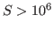

The resistive magnetohydrodynamics (MHD) model describes the dynamics of charged fluids in the presence of electromagnetic fields. MHD models are used to describe important phenomena in the natural physical world and in technological applications. This model is non-self adjoint, strongly coupled, highly nonlinear and characterized by multiple physical phenomena that span a very large range of length- and time-scales. These interacting, nonlinear multiple time-scale physical mechanisms can balance to produce steady-state behavior, nearly balance to evolve a solution on a dynamical time-scale that is long relative to the component time-scales, or can be dominated by just a few fast modes. These characteristics make the scalable, robust, accurate, and efficient computational solution of these systems extremely challenging. For multiple-time-scale systems, fully-implicit methods can be an attractive choice that can often provide unconditionally-stable time integration techniques. The stability of these methods, however, comes at a very significant price, as these techniques generate large and highly nonlinear sparse systems of equations that must be solved at each time step.
This talk describes recent progress on the development of a scalable fully-implicit variational multiscale (VMS) unstructured finite element (FE) capability for 3D resistive MHD. The brief discussion considers the development of the VMS formulation, the underlying fully-coupled preconditioned Newton-Krylov (NK) nonlinear iterative solver, and an integrated adjoint-based error-estimation and sensitivity analysis capability. To enable robust, scalable and efficient solution of the large-scale sparse linear systems generated by the Newton linearization, fully-coupled algebraic multilevel preconditioners are employed. Initial results will be presented for applying adjoint-based techniques for error-estimation and for sensitivity analysis of MHD systems. To demonstrate the performance of the fully-coupled AMG preconditioners representative results, that include the parallel and algorithmic scaling of these methods, are presented. These results include weak-scaling studies on up to 256K cores and an initial strong-scaling study on up to 500,000 cores.
Finally simulation results for two challenging scientific problems with relevance to astrophysical and geophysical flows are presented. The first is the break-up of thin Sweet-Parker current sheets into plasmoids that has been the subject of attention as a possible mechanism for fast magnetic reconnection in resistive MHD. Our numerical simulations confirm that plasmoid break-up of dynamically formed current sheets occur for

(with D. Knoll LANL). The second application is to rotating thermal convection in spherical and cylindrical geometries that have relevance to aspects of geo-dynamo physics and associated laboratory experiments.